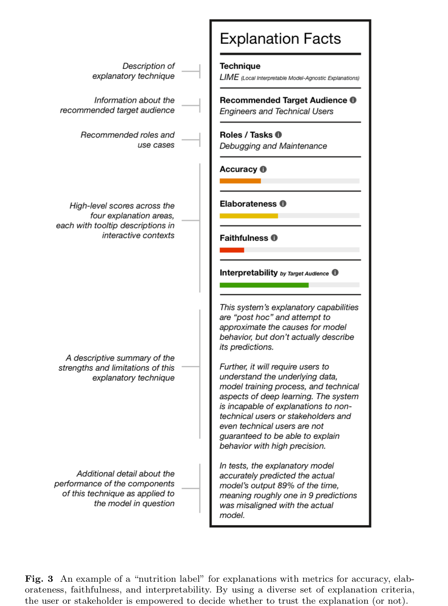
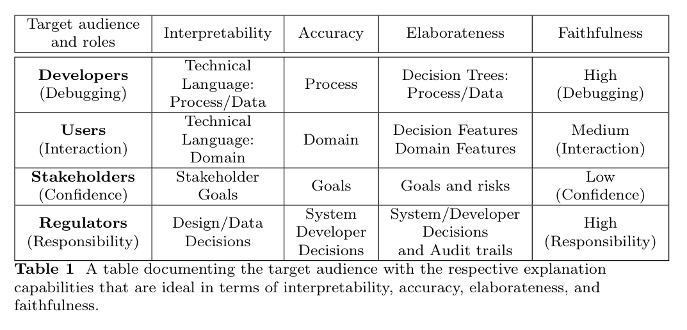

Explanation is not a Technical Term¶
- @gilpinExplanationNotTechnical2022
Abstract¶
- Artificial Intelligence (XAI) and those explanations that users and other audiences actually need, which should be defined by the full spectrum of functional roles, audiences, and capabilities for explanation
- In this paper, we explore the features of explanations and how to use those features in evaluating their utility.
- we discuss the risk of XAI enabling trust in systems without establishing their trustworthiness and define a critical next step for the field of XAI to establish metrics to guide and ground the utility of system-generated explanations
Introduction¶
- The problem is that explainability is not a well-defined goal: there is no common definition, metrics, or benchmarks for success.
- Rather than taking a view of explanations as undi↵erentiated artifacts shared by multiple users, we view them as generated in response to their functional roles, audience, and data access
- Functional role: How is the explanation going to be used?
- Audience: To whom is it directed and what is their knowledge of the system and domain?
- Capabilities: What are the capabilities of the system constructing the explanation and the source of data/knowledge used to do so?
Motivation¶
- Because explanations are links between agents, we also need to consider the audience and their knowledge background
- An explanation's functional role defines the information that needs to be communicated.
- The state of the audience's initial knowledge of both the domain and processes define a second set of requirements related to the detail and vocabulary used in the explanation.
- These three factors define the basis for metrics for an evaluation calculus that can be used to evaluate an explanation based on whether it serves the right functional role with the right level of elaboration for its audience supported by the system's knowledge of its own reasoning.
- By unpacking the idea of "explanation" into these factors, XAI can go beyond the "checking the box" phase to one in which explanations can play the role for which they were designed
The Requirements: Functional Roles¶
- Unfortunately, one of the early findings in the realm of explanation was the discovery that the human bar on what constitutes a "good explanation" is shockingly low.
- As Langer discovered in 1978, people are satisfied with "Placebic" information if it has the syntactic form of an explanation [13].
- A system's capabilities and access to knowledge about its own reasoning determine the scope and validity of the explanations it can generate.
Engineers and Developers¶
- explanations are close to the machinery, and the shared language is technical and can contain machine representation
- These users have experience working with models, understand limitations, can run experiments, and can intuit from incomplete or partial "explanations" as they perform their task: debugging and iterating on the model to improve its performance and make it trustworthy
Doctors¶
- explanations are less about the core mechanics of the models themselves and reflect the logic of the domain, a↵ording exploration, counterfactuals, cohort comparison and transparent reasoning about the features most pertinent to a diagnosis
- if a system provides a warning that a particular patient is showing signs of possible heart failure, a doctor will want a list of relevant factors in order of importance or concern, as well as the patient's prognosis compared to that of other patients, and how that prognosis changes if certain factors are amended
- At their best, the interaction between a doctor and an intelligent system should seek to mirror the sorts of interactions two doctors might have when collaborating on the task of developing a diagnosis and refining a treatment plan.
Patients¶
- patient's goal is more immediate and comes with higher personal stakes
- This is the realm of personal decision making and, in cases of emergency, immediate action
- These individuals are less informed about aspects of the medical domain, and systems tailored to them must account for that information asymmetry.
- Thus, XAI, in this use case, becomes less about collaboration or justification and instead is geared towards confidence building, risk assessment, contextualization, and guided calls to action
Regulators and Auditors¶
- require explanations that scope across the mechanisms of a system, the data used to train it, and the medical practices that it embodies.
- they require explanations that might include elements of the human in the loop in order to determine responsibility and culpability.
- engineers
- building a system, explanations need to touch on the aspects of a system's decisions that can be used in debugging, referencing the data, feature selection, and comparisons.
- users interpreting the recommendations of a system
- explanations need to include features that can be used to support exploration of hypotheticals, counterfactuals, cohort comparison and likelihoods.
- explanations need to support trust and confidence building, risk assessment, contextualization, and decision support
- stakeholders impacted by a decision
Auditors and Regulators¶
- explanations need to support comparisons and aggregate review of performance and the trail of both algorithmic and human decisions that led to it
The Requirements: User Knowledge¶
- The knowledge state of the various stakeholders interacting with the system defines another
- As noted above, the functional role of XAI starts in the realm of model debugging and diagnostics – a tool set aimed at technical users capable of deciphering machine representations, interpreting model performance metrics, and updating model training to improve performance
- Domain experts may not need explanations that provide insight into the technical workings of systems
- They want and understand explanations at the domain level.
- While it is often the case that they have the right level of domain knowledge, it is always a possibility that they lack detailed knowledge of specific domain level features and ideas.
- Impacted stakeholders are highly variable
- they may have no knowledge of either the domain or the technology. They do not have expertise in either but do have basic knowledge of how the world works.
- Stakeholders such as auditors and regulators have specialized knowledge of the ways in which data and algorithms interact and how to look at the performance of a system through the lens of comparison and systemic issues.
System Capabilities¶
Interpretability¶
- how understandable the output representation is to the audience.
- depends on the target audience and the task
Accuracy¶
- based on correctness
- except that it is in terms of the explanation itself
- dependent on both the domain and the user
- A saliency map applied to cancer images may highlight the hospital name, indicating that the reasons supporting the diagnosis is
- the hospital where the image was taken [17]
-
This explanation is true to the model but the model is faulty. The explanation is accurate but the model is not.
Trusted but not Trustworthy: A New Dark Pattern¶
- One of the dominant themes in XAI is the notion of trust
- The focus is on getting users to trust a system rather than on making the system trustworthy.
- Such trust is developed through output assessment over time and through a host of factors external to the model output itself (including the apparent trust of other experts, design decisions at the system and user experience levels, and ancillary components such as domain-informed conversational interfaces).
- hard won and easily lost
Discussion: Metrics - the next Critical step for XAI¶
- Explanations should provide new insights: explanations should go beyond the "why, what, how" [20]
- We must also be able to compare and contrast them, as explanations can disagree and directly contradict each other [21]
- We also want to quantify the system capabilities: how well the explanation actually explains
- When we as humans explain something, it is a deductive process. Each claim follows from the last claim
- The crucial point is that explanations need to fit the functional role in a manner that is interpretable to the audience
- In evaluating an explanation, the question is whether it fits the role and the audience
- With a variety of explanation types, a single "one size fits all" metric is inappropriate
- Explanations must be built, interpreted, and evaluated through the lens of the functions that they serve and the knowledge situations in which they do so; through the lens of requirements and a system's capability to meet them.
- As work in XAI continues, it must attend to what exactly is being explained, to whom the explanation is directed, and how it is going to be used, and must provide a structured, standard evaluation approach via metrics of success.
Images¶

